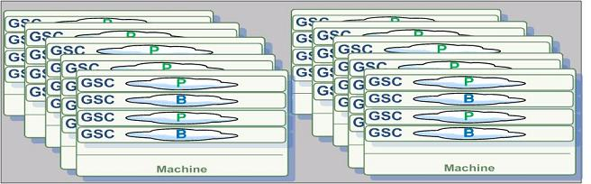

The Elastic Processing Unit is deprecated as of version 12.1, as noted in the Release Notes.
An Elastic Processing Unit (EPU) is a Processing Unit with additional capabilities that simplify its deployment across multiple machines. Containers and machine resources such as Memory and CPU are automatically provisioned based on Memory and CPU requirements. When a machine failure occurs, or when scale requirements change, new machines are provisioned and the Processing Unit deployment distribution is balanced automatically. The PU scale is triggered by modifying the requirements through an API call. From that point in time, the EPU continuously maintains the specified capacity (indefinitely, or until the next scale trigger).
The EPU has following features:
Basic steps when using the EPU:
Deploy PU
Scale up/down or in/out
Undeploy
The following is a simple example scaling a running EPU. In the diagraj, the system is initially using 2 machines, 20 partitions, 20 instances per machine (40 instances total), 4 instances per GSC, and the GSC capacity is 8GB. Total memory capacity 80 GB.:
After scaling it to leverage 10 machines, we have 4 instances per machine, and 1 instance per GSC. Total memory capacity is 400 GB.

For a quick start, follow the Elastic Processing Unit deployment example.
When using the EPU,
This section discusses the following topics:
ProcessingUnitAlreadyDeployedException is thrown, but the scale call is executed.maxConcurrentRelocationsPerMachine parameter to a value larger than 1 (the default value). Assigning a value of 2 or 3 can reduce the deploy time when there are multiple machines.singleMachineDeployment mode) ensure that the machine has enough memory/cores resources for the all the EPU instances. The reservedMemoryCapacityPerMachine should be used to ensure relevant resources. Without having these set, the deploy process will fail.org.openspaces.admin.pu.ProcessingUnit.getStatus() and the org.openspaces.admin.pu.ProcessingUnit.getProcessingUnitStatusChanged()). You can also check the total amount of memory/cores utilized by the EPU by iterating the PU instances.